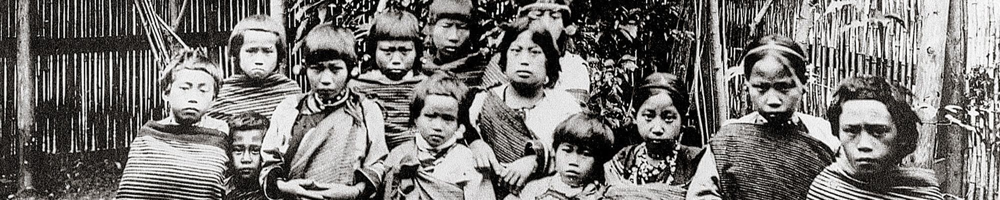
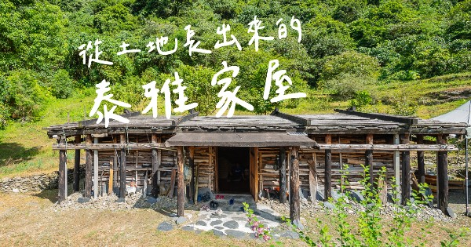

原民文化 比大多數人都還早居住在這塊土地的原住民民族。目前官方所認定的台灣原住民族群共有16個族,尚不包括已經漢化的平埔族群群 原民族群文化的多樣及豐富,值得我們去認識不同的文化底蘊。
一、地理分布:
分佈在台灣北部中央山脈兩側，以及花蓮、宜蘭等山區。又分為泰雅亞族（Tayal）和賽德克亞族（Sedek）。
泰雅亞族又分為Sekoleq群和Tseole群。賽德克亞族又分為東賽德克群和西賽德克群。
泰雅族居住地域境內的高山相當多，例如插天山、棲蘭山、合歡山、大霸尖山、奇萊山等都是。河川則有新店溪、大甲溪、秀姑蘭溪等。
以山田燒墾和和狩獵採集為生。人口分佈以花蓮秀林鄉最多，分佈區尚有南投仁愛鄉、新竹尖石鄉、桃園復興鄉、花蓮縣萬榮鄉、宜蘭縣南澳鄉。總人口數僅次於阿美族，為台灣原住民族的第二大族。
二、認識泰雅族
1.部落組織 2.祭祀團體 3.共負罪責團體 4.狩獵團體，這四個團體的成員有互相重疊的特質，在不同部落，祭祀團體可能大於狩獵團體，其他的部落可能狩獵團體大於任何一個團體。各地的差異性頗大，無法一概而論。
一是gaga的觀念。另一是rutux的信仰理念。泰雅族是一個平權的社會，由領導能力強的人出任部落領袖，狩獵、出草也由英勇的族人擔任領袖。但遇到部落有重大事情時，則由長老會議決策。
黥面對於男子而言，是成年的標誌也是勇武的象徵。對於女子，則是善於織布的標記，一位泰雅女子，在十三、四歲的時候，就跟著媽媽學習織布的技巧，也開始為自己準備出嫁時的衣裳，當少女的織藝精進，也就是准許在臉上刺青的時候了，這時也是尋覓如意郎君的好時機，一位不會織布與沒有黥面的女孩子在部落裡是沒有人追求的。但黥面的風俗在日本人佔領台灣期間也漸漸被禁止，目前仍保有黥面的泰雅人都是七、八十歲的族人。
早期泰雅人的傳統住屋建築型分為半豎穴式（地分）及平地式二種。
第一種半豎穴式：部份地區的泰雅人將地基向下挖三至五尺深，將泥土堆積在地基四周做成土壘，入口部份則留缺口當門。在外觀上，屋簷幾乎與土壘相連，住屋外觀非常低矮，但屋內地基與屋頂之距離卻有七、八尺甚至一丈餘高（如圖一）。
第二種平地式：部份地區的泰雅人將地基剷平，直接在上面建屋，外庭與內庭無高低之分。
